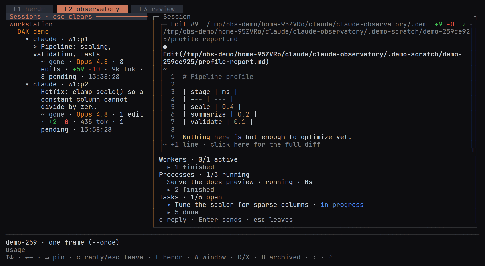

The observatory tab
The observatory tab lists sessions beside a detail pane: a pinned conversation, workers, tasks and review links.
The Observatory tab lists each machine’s sessions, grouped by workspace, beside a pinned conversation detail.
Active and unresolved sessions
The tree joins herdr’s live panes with OAK’s captured history. Active panes and unresolved sessions remain visible. A resolved, inactive session is archived rather than deleted; B includes archived sessions again.
Sessions whose row says done collect under their machine in one ▸ N done row, closed at first, which also counts the edits still pending inside it (▸ N done · M pending). Click it, or select it with the arrow keys and press Enter or →, to open it; ← closes it. The open fold groups sessions by workspace, with finished-only workspace headers inside it. The app remembers each fold while it runs. A done session folds even with edits left to review. Pinned or selected sessions, the session OAK is watching, and sessions whose workers are still at it stay visible. A new turn moves a session out of the fold automatically; filtering for a finished session reveals it.
Under each machine, sessions are grouped by the herdr workspace their pane runs in, named as in herdr’s sidebar; each pane line keeps its agent kind and pane id. A session running outside herdr is listed under its project’s name, or under Unknown workspace when the project is unknown. Workspaces with a live agent or the most recent activity come first, and the workspace of the session OAK is watching leads its machine. Within a workspace, sessions are listed newest first, each with its status, model, edits, tokens, pending count and the clock time of its last activity. A Codex agent that asked you a question and kept working reads working, with ? question beside it in the waiting colour, in its row and in the conversation header. herdr reports such a pane as blocked, because Codex titles its terminal Action Required while the question waits. OAK checks the session’s Codex rollout before it shows that status. The pane reads as working while the rollout records a turn that has started and not ended and no permission prompt is waiting. The rollout must also have been written within the last 90 seconds, or the pane’s screen must show Codex at work. A long command writes nothing to the rollout while it runs. Once the rollout has been quiet for 90 seconds, OAK reads the pane’s visible screen through herdr and looks above Codex’s prompt for its running timer, such as Working (5m 2s • esc to interrupt). While the pane stays that way, OAK reads its screen again every 15 seconds. Every other pane, Claude Code’s included, shows the status herdr reports.
A session whose workers are still at it has one more row under its stats, counting them by state in herdr’s words, such as ▸ 12 workers · ⠴ 6 working · ◐ 6 blocked. →, Enter or a click opens it: the workers waiting on a person come first, then those working, each state under a header with its count, and each worker shown as a session is, its title and then its status, model, edits and their lines, tokens, pending count and the clock time of its last write. A worker’s edits are the review units whose latest edit one of its own tool calls made, so a unit another agent edited after it counts for that agent. A phase no record states, such as a wait that only a call left unanswered suggests (a permission prompt, or a long command) in a session whose hooks OAK does not record, is marked ~. ←, Enter or a second click closes it, and each session’s group stays open or closed while the app runs. The arrow keys step through the summary, the headers and the workers; Enter or a click on a worker opens its own live log in the detail pane. A finished worker is not listed here, only in the pinned session’s Workers, and a session with a worker still at it is listed under its machine, even with nothing pending and outside herdr. A session on a saved machine shows its workers from that machine.
Once oak sync is in use on this machine (a run set it up, a backup is chosen, or a conflict is open), each saved machine has a sync row under it: what the last run pulled from it and when, or why the run could not, in the CLI’s words. This machine has two: the last run, with the conflicts and warnings it left, and the backup, with its key’s fingerprint. The open conflicts follow the raised hands in the i list; Enter on one offers its two ways out, both copies opened in your editor or the other machine’s copy deleted (oak sync resolve). The options window’s SYNC section runs a sync (Enter on Sync now again stops a run it started), shows the last run whole, sets it up or changes the backup (it hands the terminal to oak sync setup), takes the backup folder’s record over when a run refused it, once you answer that this machine is a reinstall, and includes or excludes each saved machine and this project. The rows and the conflicts show only while sync is in use, and the SYNC section only then or once a machine is saved, so a machine with neither shows none of this. Database & sync explains what sync carries between machines.

Worker logs
Click a worker in the session tree or the detail’s Workers list, or press Enter on its row, to read its own replies, thoughts and tool calls in the detail pane. The log follows new activity and stays readable when the worker finishes. Its end line gives the recorded time in UTC, including milliseconds. A quiet pause is not an end: without a completion record the log keeps waiting. A worker resumed later updates the open panel again.
A worker listed under a saved machine reads its log from that machine over SSH, at least ten seconds between reads. An unavailable machine produces an error in the pane. No local transcript stands in for its log. In-process workers have no herdr tab or chatbox; herdr tabs run Codex or Claude Code itself. Select the parent session to return to its conversation and controls.
The pane shows the latest 200 entries and states how many older entries were left out. For a deeper log use oak feed --kind agent --id <worker> --session <parent> --limit <n>. Add --follow to keep it on screen, and --machine <label> for a worker on a saved machine.
Shell processes
Every pinned or previewed session has a Processes header directly below Workers, here or on a saved machine. It counts running shells out of the total, such as Processes · 2/40 running, or Processes · 0. An empty list says No shells in this session; an unavailable list keeps its reason under the header. The list includes shells started by the session and its workers. Running shells come first, with their command or description, state and runtime. Finished shells show their exit code and fold behind one N finished row; click it to expand.
Click a running or finished shell to follow its output in the detail pane. OAK reads the latest 16 KiB and updates while the file grows. Running rows on screen also show up to three recent lines. Reads stay bounded even when an output file is large. Select the parent session to return to its conversation.
Output is plain text: OAK removes terminal control sequences, including color, cursor movement and window titles. Local process views refresh at most once every two seconds. A saved machine reads its own output files over SSH, with at least ten seconds between reads.
Codex exec sessions also appear when a tool result reports a running session ID. Codex does not record a separate output file; their tails update when exec or write_stdin results enter the transcript. OAK labels that limitation and never guesses an output path.
To follow the same shell from a terminal, use oak processes --follow <id> --session <session>. For a Claude worker’s shell, use <worker-id>:<shell-id>. Add --machine <label> for a saved machine.
Open a workspace window
Select a session and press W to open its workspace in your GUI editor. A machine or workspace group that names exactly one folder also has a clickable W window button. Each press opens one workspace on its owning machine. Local folders use your editor’s launcher; saved machines use VS Code/Cursor Remote-SSH or JetBrains Gateway.
The window pins the session and opens its pending changes in the stacked editor, ten per page. With nothing pending, OAK says so and opens no empty tab. It reveals Review, File History and the Observatory Timeline, and focuses the Overview with Sessions, Workers, Processes, Tasks and Workflows side by side and the change map beside them. Your saved view placements stay in place. A terminal named OAK runs oak; an existing OAK terminal is reused. JetBrains needs its Terminal plugin for that terminal. An already-open workspace receives the same request without restarting the editor; a request is used once and expires after ten minutes.
Choose the editor under o → GUI editor (prefs.guiEditor): ← → step through Auto and the GUI editors found on this machine, and Enter types any command. Auto (a blank setting) uses the first of these that applies: the Terminal editor setting (prefs.editor), $VISUAL or $EDITOR when it names a GUI editor; the editor whose integrated terminal OAK runs in (VS Code, Cursor or Windsurf), when its command is on PATH; then the first GUI editor on PATH. So nvim as the terminal editor still leaves W a window in Cursor or VS Code. W refuses, naming the setting, only when there is no GUI editor, or when the setting names a terminal editor. The status row names the GUI editor that ran and where it came from. A missing folder or a session with no recorded workspace produces a status message. If a saved machine cannot confirm its folder, update OAK there and refresh its listing.
Run the terminal app on the machine with the editor. Over SSH or without a display, OAK prints the command to run there. The status row reports the command or the reason it could not open. OAK does not pass --new-window: the editor can reuse an existing window for that folder, though the operating system may prevent it from taking focus.
Prefer one editor window per machine and workspace to a multi-root workspace of mounted folders. Remote-SSH runs OAK, git and file watching on the owning machine, keeping one machine’s slow extension host or network share from stalling all your workspaces.
Conversation detail
Click a session (its pane line, title or stats line) to pin its conversation. The arrow keys preview a header without pinning; Enter pins it. Either way, that session is the one the Review tab shows. Browsing other rows then leaves the pinned transcript in place. The detail shows each of your prompts in a box like the tool calls beside it, with its time on the box’s edge and its text whole on a grey ground, then the agent’s replies, reasoning, tool activity and captured edits. Workers, Processes and Tasks follow: each header counts the active entries out of the total, working or waiting workers and open tasks are listed in their state’s colour (a worker’s second line, with its model, edits and tokens, in the session list’s colours), and the rest fold behind one row that a click opens. A background agent counts as working until Claude Code logs it finished (failed, killed or stopped reads as errored) and again once it is resumed; with no such notice, it is done after it, its session and the session’s other agents have all been quiet for five minutes. One stopped on a tool call reads as working instead, however long the call runs, or as waiting while that call’s permission prompt is up; one stopped on a question reads as waiting.
A pinned conversation opens at its newest message and follows the tail as the agent writes. Scrolling back holds that position; End, or the ↓ newest control at the foot of the pane, returns to the tail and resumes following.
Drag across text in the session tree or a conversation to copy it, as in the herdr tab: the selection stays within the pane where it started, and releasing the button copies it to the clipboard. A prompt copies as its text, without its box. A click that does not move keeps its usual action.
Press t to focus a live pane in herdr; Tab goes to Review, which already shows the selected session, and the ⌕ review button opens it there too. Press c for the thin reply box; Enter explicitly submits the draft, and a failed send keeps it. On macOS and Linux, a reply on its way to a pane on a saved machine still arrives if you quit the app or close its terminal right after sending it, as one sent from VS Code does, and the app’s reads of saved machines stop when it ends. A reply that a JetBrains IDE is sending when it quits arrives if the IDE leaves oak running, and may not if the IDE stops the processes it started. Pinning another session keeps an unsent draft with its conversation until you pin that conversation again. A blocked agent, an agent with a question waiting, or a session with no live pane, offers no reply box — answer it in the herdr tab; review comments and quoted replies are copied to the clipboard instead.
R resolves the selected session (it keeps its pending edits and clears its store) and X stops its running agent. Both ask first, and Esc or n cancels. The same two sit as buttons beside ↗ herdr and ⌕ review under the session title: ⚑ resolve and ■ stop. A key this tab does not use does nothing here; Review’s verbs never act from it.
Arranging the panes
Use split, resize and zoom to read more than one conversation: | and - split the focused pane side by side or stacked, v chooses what it shows, z zooms it, H J K L swap it with a neighbour, F4, F5, … focus a pane (F1–F3 are the tabs), and the : palette closes one. A click in the session list fills the conversation pane you focused, or the one the last pin filled. Every binding is listed in the ? help screen. Conversation rendering follows transcript changes independently of the machine list.
For a session on a saved machine, its conversation and diff previews come from that machine over SSH, and so do its title, model, tokens, pending edits and activity, unless oak sync read that machine in the last ten minutes and nothing there may be running (no session active in the last two hours, as its records and the files that run saw say, no hand raised in the last day still up): then they come from that machine’s records in the local database, and a line under the machine says so, with when oak sync read it. Automatic reads wait at least ten seconds and back off when responses are slow. A local sync mirror never supplies those facts. When the owner cannot answer, the detail shows an error and, if a mirror exists, its last sync time. Older remote OAK builds produce an explicit update-required message.
Remote herdr tabs also take their session titles from the owning machine. Names refresh when its session catalog arrives; a local sync copy cannot rename a remote tab.